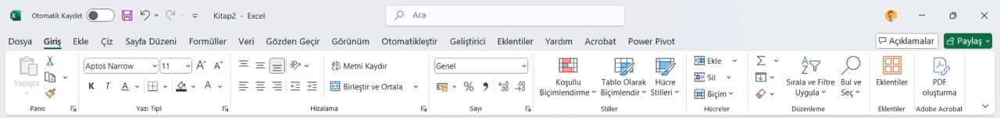
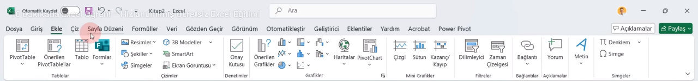
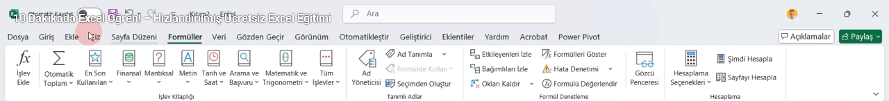

?? EXCEL GIRIS SEKMESI - TUM AYRINTILAR

?? PANO (CLIPBOARD)
Yapistir ve Ozel Yapistir
Excel'de yapistirma islemi cok detaylidir. Sadece formulu, sadece degeri veya sadece bicimi yapistirabilirsiniz.
Ozel Yapistir Kisayolu: CTRL + ALT + V
Bicim Boyacisi
Secili hucrenin tum gorsel ozelliklerini (renk, font, kenarlik) kopyalayip baska hucrelere uygular.
?? YAZI TIPI (FONT)
Kenarliklar (Borders)
Excel'in klavuz cizgileri yazicida cikmaz. Tablonun yazdirilabilir olmasi icin buradan kenarlik eklenmelidir.
Yazdirma ve Dolgu
Hucre arka plan rengi ve yazi tipi rengi buradan ayarlanir.
?? HIZALAMA (ALIGNMENT)
Metni Kaydir (Wrap Text)
Hucreye sigmayan uzun yazilari alt alta yazar. Boylece sutun genisligini bozmaz.
Hucre ici alt satir gecisi: ALT + ENTER
Birlestir ve Ortala
Birden fazla hucreyi tek hucre yapar. SADECE SOL USTTEKI veriyi saklar, digerlerini siler!
?? SAYI FORMATLARI (NUMBER)
Genel, Sayi, Para Birimi
Sayinin tipini belirler. Finansal formatta para birimi simgesi sola yasli durur.
Tarih ve Saat
Excel tarihleri 1900'den baslayan sayilar olarak tutar. 1 sayisi 01.01.1900 demektir.
??? STILLER (STYLES)
Kosullu Bicimlendirme
Belirli bir sarta uyan (orn: 50'den kucukse) hucreleri otomatik renklendirme isidir.
Tablo Olarak Bicimlendir
Verileri "Zeki Tablo"ya donusturur; otomatik filtre ve toplam satiri ekler.
?? DUZENLEME (EDITING)
Otomatik Toplam (AutoSum)
Hizlica toplama, ortalama, sayma, max ve min islemlerini yapar.
Formul: =TOPLA(A1:A10)
Sirala ve Filtre Uygula
Verileri siralama (A-Z) veya belirli kriterlere gore suzme (filtreleme) yapar.
? EKLE SEKMESI - TUM AYRINTILAR

?? TABLOLAR
PivotTable (Ozet Tablo)
Karmasik veri kumelelerini saniyeler icinde ozetler. Satir ve sutunlari surukle-birak yontemiyle analiz etmenizi saglar.
Onerilen PivotTable'lar
Excel'in verilerinize bakarak size en uygun ozet tablo yapisini tavsiye ettigi aractir.
Tablo
Verileri iliskili bir kume haline getirir. Otomatik filtreleme ve seritli satirlar ekler.
??? CIZIMLER
Resimler ve Sekiller
Cihazdan veya internetten gorsel ekler. Geometrik sekiller (ok, kare vb.) cizmenizi saglar.
SmartArt ve Grafikler
Hiyerarsik semalar ve surec diyagramlari ekler.
?? GRAFIKLER
Onerilen Grafikler
Verileri analiz ederek en uygun gorsel sunumu (Sutun, Cizgi, Pasta) tavsiye eder.
Karma Grafik ve Digerleri
Iki farkli veri turunu (orn: satis miktari ve kar orani) ayni grafikte farkli eksenlerle gosterir.
?? SPARKLINE'LAR
Cizgi, Sutun, Kayip/Kazanc
Tek bir hucre icine sigan mini grafiklerdir. Veri trendlerini (artis/azalis) tek bakista gosterir.
?? FILTRELER VE BAGLANTILAR
Dilimleyici (Slicer)
Tablo veya PivotTable verilerini gorsel butonlarla hizla filtrelemeyi saglar.
Kopru (Hyperlink)
Web sitelerine veya dosya icindeki diger hucrelere baglanti verir.
?? METIN VE SIMGELER
Metin Kutusu ve WordArt
Hucrelerden bagimsiz hareket eden yazi alanlari ve dekoratif metinler ekler.
Denklem ve Simge
Matematiksel formuller ve ozel karakterleri (©, ?) ekler.
?? SAYFA DUZENI SEKMESI - TUM AYRINTILAR

?? TEMALAR (THEMES)
Temalar, Renkler ve Yazi Tipleri
Belgenin tamamina uygulanan renk, yazi tipi ve efekt setlerini degistirir. Tek tikla profesyonel bir gorunum saglar.
?? SAYFA YAPISI (PAGE SETUP)
Kenar Bosluklari
Metnin sayfa kenarlarindan ne kadar iceride olacagini belirler (Normal, Dar, Genis).
Yonlendirme (Orientation)
Sayfayi Dikey (Portrait) veya Yatay (Landscape) olarak ayarlar.
Boyut (Size)
Kullanilacak kagit turunu secer (A4, A3, Letter vb.).
Yazdirma Alani (Print Area)
Sadece secili hucrelerin yazdirilmasini saglar. Buyuk tablolarda sadece belirli bir kismi cikarmak icin kullanilir.
Kesmeler ve Arka Plan
Sayfa sonu ekler veya belgenin arka planina bir resim yerlestirir.
Basliklari Yazdir
Cok sayfali ciktilarda, en ustteki baslik satirlarinin her sayfada otomatik olarak tekrarlanmasini saglar.
?? SIGDIRMAK ICIN OLCEKLENDIR
Genislik, Yukseklik ve Olcek
Buyuk bir tabloyu tek bir sayfaya sigdirmak icin kullanilir. Olcek yuzdesini dusurerek verileri kucultur.
??? SAYFA SECENEKLERI
Klavuz Cizgileri ve Basliklar
Hucre cizgilerinin ve sutun harflerinin (A, B, C) ekranda gorunup gorunmeyecegini veya yazida cikip cikmayacagini belirler.
?? YERLESTIR (ARRANGE)
One Getir / Arkaya Gonder
Ust uste binen resim veya sekillerin sirasini degistirir.
Hizala, Gruplandir ve Dondur
Nesnelerin sayfadaki yerini milimetrik ayarlar veya birden fazla nesneyi tek bir parca haline getirir.
fx FORMULLER SEKMESI - TUM AYRINTILAR

?? ISLEV KITAPLIGI (FUNCTION LIBRARY)
Tum fonksiyonlarin kategorize edildigi yerdir.
Mantýksal (Logical)
Sartli islemler yapmanizi saglar. Sinavda kesin cikar!
=EGER(sart; dogruysa_ne_yazsin; yanlissa_ne_yazsin)
=VE(sart1; sart2) | =YADA(sart1; sart2)
Arama ve Basvuru
Baska bir tablodan veri cekmek icin kullanilir.
=DUSEYYAZ(aranan_deger; tablo_dizisi; sutun_indis_sayisi; 0)
Matematik ve Trigonometri
Sayýsal islemleri yonetir.
=TOPLA(aralik) | =ETOPLA(aralik; sart; toplam_araligi)
=YUVARLA(sayi; basamak_sayisi)
Metin (Text)
Yazilari duzenler.
=BIRLESTIR(metin1; metin2) | =SOLDAN(metin; karakter_sayisi)
??? TANIMLI ADLAR (DEFINED NAMES)
Ad Yoneticisi
Belirli bir hucre araligina isim vermenizi saglar. Ornegin A1:A100 araligina "Satislar" ismi verip formullerde bu ismi kullanabilirsiniz.
=TOPLA(Satislar)
??? FORMUL DENETLEME
Etkileyenleri / Etkilenenleri Izle
Formulun hangi hucrelerden veri aldigini veya hangi hucreleri besledigini oklarla gosterir. Karmaþýk hatalari bulmak icin kullanilir.
Formulleri Goster
Hucrlerdeki sonuclari gizler ve dogrudan yazilan formulleri gosterir.
Kisayol: CTRL + ` (Kesme Isareti)
Hata Denetimi
Belgedeki formullerde yapilan mantik hatalarini (Sifira bolme, gecersiz isim vb.) bulur.
?? HESAPLAMA (CALCULATION)
Hesaplama Secenekleri
Excel'in otomatik mi yoksa manuel mi hesaplama yapacagini belirler. Cok buyuk dosyalarda hizi artirmak icin "El Ile" secilebilir.
?? VERI SEKMESI - TUM AYRINTILAR

?? VERI AL (GET & TRANSFORM)
Dis kaynaklardan veri cekme islemleri.
Verileri Al
Excel disindaki kaynaklardan (SQL, Web, Metin dosyasi, Access) veri aktarmanizi saglar.
Web'den Veri Cekme
Bir internet sitesindeki tabloyu kopyala-yapistir yapmadan, canli baglanti kurarak Excel'e aktarir.
??? SIRALA VE FILTRELE
Siralama (Sort)
Verileri A'dan Z'ye veya kucukten buyuge dizer. "Ozel Siralama" ile birden fazla sutuna gore (Orn: Once Sehir, sonra Maas) siralama yapabilir.
Filtre (Filter)
Basliklara oklar ekleyerek sadece belirli kriterlere uyan verileri gormenizi saglar.
Kisayol: CTRL + SHIFT + L
??? VERI ARACLARI
Veri temizleme ve dogrulama islemleri.
Metni Sutunlara Donustur
Tek bir hucreye yazilmis verileri (Orn: "Ad Soyad") bosluk veya virgul gibi isaretlere gore ayri sutunlara boler.
Yinelenenleri Kaldir
Listedeki tekrar eden (ayni olan) satirlari temizleyerek her veriden sadece bir tane kalmasini saglar.
Veri Dogrulama (Data Validation)
Hucreye girilecek veri tipini kisitlar.
Ornek: Sadece 1-100 arasi sayi girilsin veya acilir bir liste (Dropdown) olussun.
?? TAHMIN (FORECAST)
Durum Cozumlemesi (What-If)
"Hedef Ara" ozelligi ile istediginiz bir sonuca ulasmak icin hangi verinin ne olmasi gerektigini hesaplar.
Ornek: Ortalama 85 olsun diye finalden kac almaliyim?
?? ANAHAT
Gruplandir ve Alt Toplam
Satirlari gizlenebilir gruplar haline getirir. "Alt Toplam" ise her grup degisiminde otomatik toplama yapar.